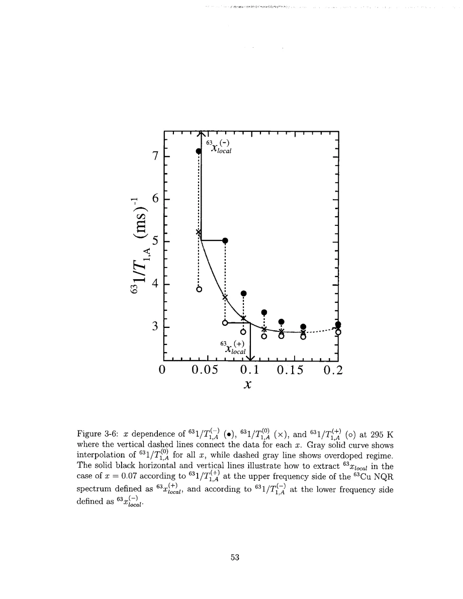
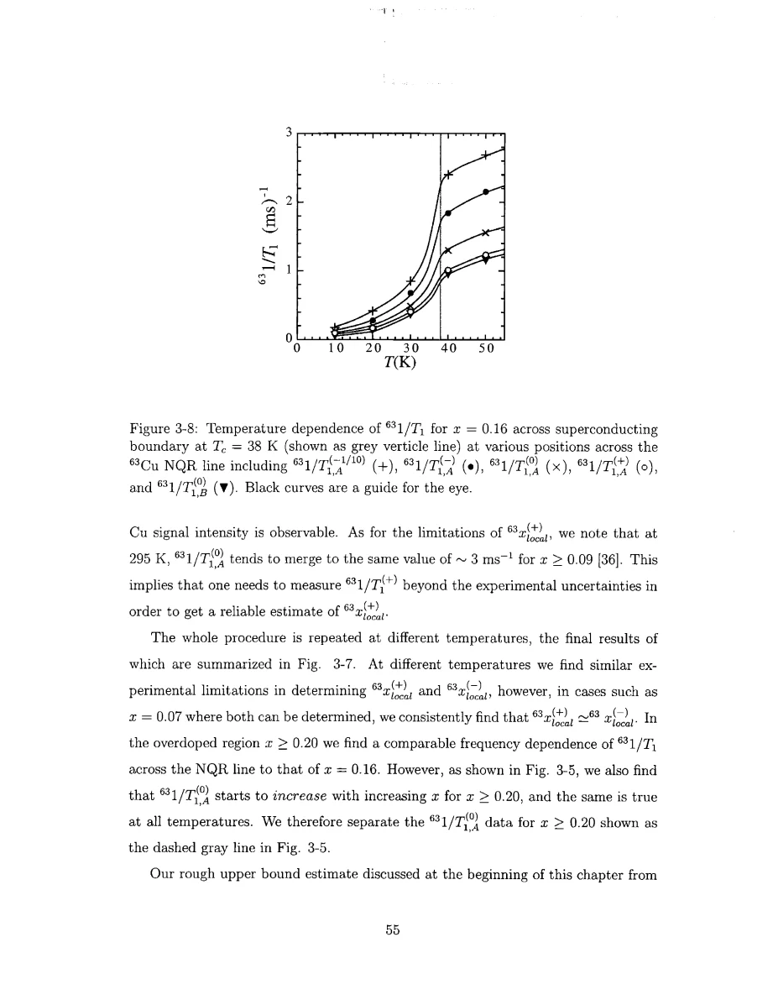

Singer · supplied source 2002 · chapter unit
3. Infer local variation from Cu dynamics
Calibrated wing rates reveal an electronic spread, while lattice broadening prevents a direct linewidth-only conversion.
The question: What does measuring T₁ on the wings add beyond measuring the spectral peak?
Before you start: the terms you need
- Nominal x: Sr atoms per LSCO formula unit, used as the average hole-doping label.
- Electric field gradient (EFG): curvature of the electric potential at a nucleus; determines the Cu quadrupole resonance.
- Knight shift: the nuclear resonance shift caused by electronic magnetic response, with orbital and spin contributions.
- T₁ and T₂: recovery of longitudinal nuclear magnetization and decay of transverse coherence; they answer different questions.
- Hyperfine form factor: the wavevector-dependent weighting through which a nucleus samples electronic spin fluctuations.
- HWHM: half width at half maximum; the thesis also defines an effective width from the second moment.
See → explain → check
Follow the idea in 3 pictures.
Picture 1 / 3
Compare wings to sample centers
Look for: Use several nominal compositions to calibrate local rates.
Swipe across the picture to read every label, or enlarge it below.
- Wing 1/T₁
- Center-rate calibration
- Matched local x
Teaching schematic; no measured points or calibrated scales.
The wing-to-center comparison gives an inferred electronic doping scale.
Picture 2 / 3
Do not turn every width into holes
Look for: Lattice EFG broadening survives even when the modeled holes are uniform.
Swipe across the picture to read every label, or enlarge it below.
- Random-lattice width
- Full observed width
Teaching schematic; no measured points or calibrated scales.
A linewidth-only estimate overassigns broadening to electronic variation.
Picture 3 / 3
A common transition affects different regions
Look for: Frequency-selected nuclei show distinct rates but a shared drop near bulk Tc.
Swipe across the picture to read every label, or enlarge it below.
- Lower-frequency nuclei
- Higher-frequency nuclei
No transition curves are invented; inspect the original Fig. 3-8 for measured rates.
Local-state variation does not imply independently superconducting patches.
Explain it back.
Try answering aloud before opening the explanation.
Why is Δxlocal from the one-tenth-intensity wing larger than the half-intensity result?
It samples farther into the inferred distribution; the stated extent depends on which spectral positions are used.
What happens if the calibration rate changes hardly at all with x?
Small rate errors become large local-x errors, so inversion is unreliable.
Go deeper Follow the full argument
Build a calibration before assigning local holes
Singer measures 1/T₁ at the center of gravity of the A and B lines over nominal x and temperature. These are reference responses for the sample average. At each fixed temperature the A-line center rates are interpolated versus x, then a rate measured at a wing is compared with that reference curve. This comparison is empirical and does not yet invoke a circular patch or a specific microscopic spatial pattern. In the studied underdoped region, lower-frequency nuclei generally relax faster and have temperature dependence resembling a less-doped sample; higher-frequency nuclei resemble a more-doped sample. The B-line gives comparable inferred variation after accounting for its different overall relaxation scale. Its rate is modestly smaller than the A-line rate, but that does not require B sites to have an entirely separate electronic phase.
PDF p. 43 · PDF p. 44 · PDF p. 45 · PDF p. 46 · PDF p. 47 · PDF p. 48 · PDF p. 49 · PDF p. 50 · PDF p. 51
A concrete example and its conditioning
For nominal x = 0.07 at 295 K, the upper half-intensity wing is assigned a local value near 0.10 and the lower wing near 0.043. The quoted characteristic deviation is about 0.028. Those values are inferred through the relaxation calibration, rather than by reading a frequency-to-hole axis off the raw spectrum. Taking a more distant one-tenth-intensity wing gives a larger range, so Δxlocal is a specified characteristic extent, not the entire distribution support. The calibration also has practical limits. A flat rate-versus-x relation magnifies measurement uncertainty in xlocal; some low-hole reference states are already wiped out; and the overdoped rate trend can turn upward. These features forbid a single global inverse map across all x and temperatures. The thesis therefore marks unavailable or uncertain boundaries rather than extrapolating every wing into a unique local composition.
Temperature and superconductivity
The inferred local extent grows on cooling. Meanwhile, the NQR center frequencies and widths display a change in temperature dependence associated with local orthorhombic distortions. Their EFG contribution must later be separated from electronic variation. At nominal x = 0.16, rates measured at several spectral positions decrease below the common bulk Tc near 38 K. Some locally inferred low-hole regions would have a lower Tc if treated as isolated homogeneous samples, yet their relaxation already falls at the bulk transition. Singer uses this to argue that superconductivity affects the coupled sample rather than acting as independent transitions in each assigned patch. The argument does not quantify a complete proximity model. Likewise, the presence of frequency-dependent T₁ is a more immediate observation than an exact local hole number. The numerical assignments depend on the empirical local-to-nominal-response correspondence and on the detectable portion of the sample.
PDF p. 54 · PDF p. 55 · PDF p. 56 · PDF p. 57 · PDF p. 58 · PDF p. 59 · PDF p. 60
Translate the mathematics Essential equations and their meaning
xlocal = x ± Δxlocal
Symbols: The ± endpoints are characteristic wing assignments at the chosen half-intensity positions.
Source Eq. 3.1 does not define hard two-phase boundaries or a Gaussian standard deviation.
Read the evidence Guided original source pages

PDF p. 53

PDF p. 55
What the evidence supports—and where it stops
- Wing assignments are empirically calibrated electronic labels; they are not local chemical measurements.
- The rates are measured with finite echo spacing, which can underweight fast-decaying nuclei.
Source version, reading coverage and preservation
Every substantive chapter and appendix was read from locally generated Windows OCR of the scanned original. Key figures, symbols, equations and boundaries were checked on readable full-page renders; PDF and printed page numbers agree at inspected locations.
Reviewed body pages: 10, 11, 12, 13, 14, 15, 16, 17, 18, 19, 20, 21, 22, 23, 24, 25, 26, 27, 28, 29, 30, 31, 32, 33, 34, 35, 36, 37, 38, 39, 40, 41, 42, 43, 44, 45, 46, 47, 48, 49, 50, 51, 52, 53, 54, 55, 56, 57, 58, 59, 60, 61, 62, 63, 64, 65, 66, 67, 68, 69, 70, 71, 72, 73, 74, 75, 76, 77, 78, 79, 80, 81, 82, 83, 84, 85, 86, 87, 88, 89, 90, 91, 92, 93, 94, 95, 96, 97, 98, 99, 100, 101, 102, 103, 104, 105, 106, 107, 108, 109, 110, 111, 112, 113, 114, 115, 116, 117, 118, 119, 120, 121, 122, 123, 124, 125, 126, 127, 128, 129, 130, 131, 132, 133, 134, 135, 136, 137. Bibliography pages 138–144 were not independently verified against every cited publication. Front matter was inspected for title, abstract and chapter mapping. The guide does not claim manual visual reading of every scan or exact transcription of all derivations; OCR is imperfect and the damaged abstract region was checked against the conclusions.
Source SHA-256: e5fdb96ea81a06f7a51624e02fa58319dc3d21926a030e06fbbedc7061f5937d. Original file bytes preserved locally, and in this room’s original download.
Thesis - Singer - 2002 - Nuclear resonance of electronic inhomogeneity in LSCO.pdf